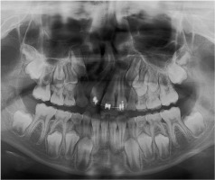
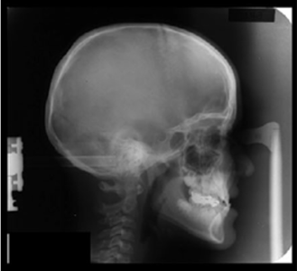
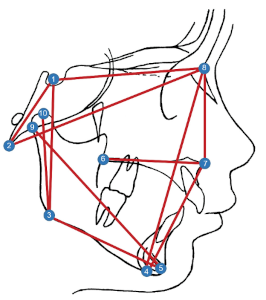
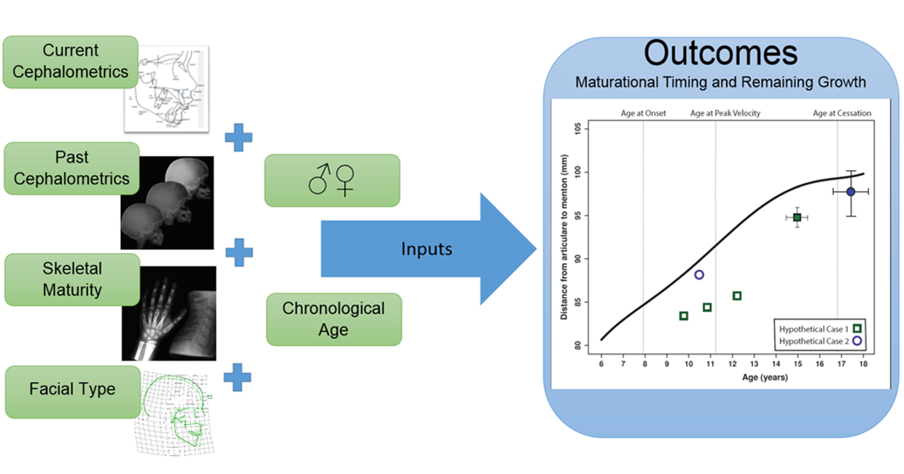
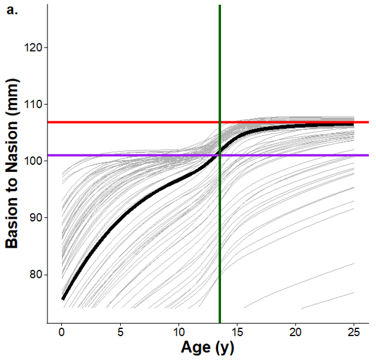
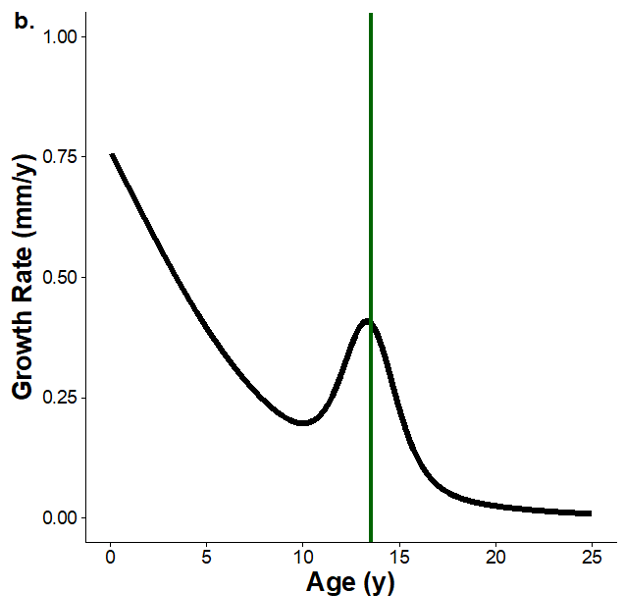

Craniofacial Growth
For orthodontic and craniofacial surgical interventions, estimation of the timing of peak growth and/or the amount of remaining growth is important for planning treatment. We are seeking to estimate these quantities for a wide range of traits in two- and three-dimensional imaging.

We are part of a large collaborative project led by Richard Sherwood (University of Missouri), which also includes Dana Duren (University of Missouri), Kieran McNulty (University of Minnesota), Heesoo Oh (University of the Pacific), and Manish Valiathan (Case Western Reserve University). The overall goal is to understand the patterns of human craniofacial growth and variation.
We work with a very large set of longitudinal cephalographs that make up the AAOF Craniofacial Growth Legacy Collection. These have been landmarked for dozens of anatomical features.


We use information about current and past morphology, estimates of skeletal maturity, and standard facial types to predict future growth.

We use Bayesian inference to fit a double logistic growth equation to each trait
\[ trait(age) = \frac{a_1}{1 + \exp(-b_1 (age - c_1))} + \frac{a_2}{1 + \exp(-b_2 (age - c_2))} \]
which includes two periods of growth, prepubertal and a pubertal growth spurt. This approach works better than more commonly used (and easier to fit) polynomial or spline models.


We are developing Shiny apps to bring the results of these analyses to the clinical community.
Here are some recent papers from this project: